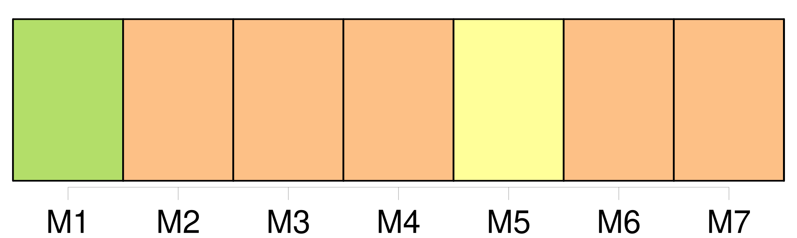
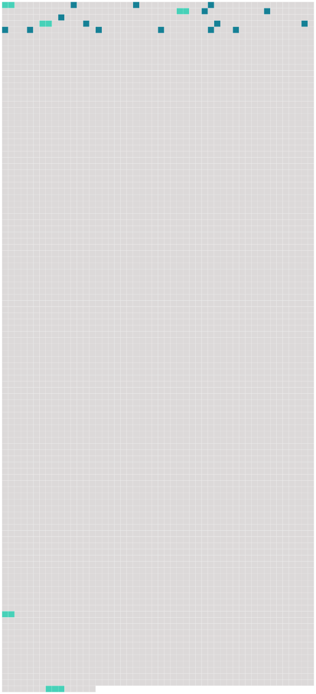

Longueur nb maillons : 20 mentions |
 |
[Deux autres] avaient trois et quatre ans. Melchior ne s’ [en] occupait jamais.
Louisa, forcée de sortir, [les] confiait à Christophe, qui avait maintenant six ans. Il [en] coûtait à Christophe : car il devait renoncer pour ce devoir à ses bonnes après-midi dans les champs. [1 phrases] Il amusait de son mieux [les petits] , en [leur] montrant ses jeux ; et il s’ appliquait à [leur] parler, comme il avait entendu sa mère causer avec le bébé. Ou bien il [les] portait dans ses bras, l’ un après l’ autre, comme il avait vu faire ; il fléchissait sous le poids, serrant les dents, pressant de toute sa force le petit être contre sa poitrine, pour qu’ il ne tombât pas. [Les petits] voulaient toujours être portés, [ils] n’ en étaient jamais las ; et quand Christophe ne pouvait plus, c’ étaient des pleurs sans fin. [Ils] lui donnaient bien du mal, et il était souvent fort embarrassé d’ [eux] [Ils] étaient sales et [demandaient] des soins maternels. [1 phrases] [Ils] abusaient de lui. Il avait envie parfois de [les] gifler ; mais il pensait : « [Ils] sont petits, [ils] ne savent pas » ; et il se laissait pincer, taper, tourmenter, avec magnanimité. [237 phrases] Elle ne lui disait rien ; mais, une ou deux fois, quand les autres étaient sortis, [les enfants] dans la rue, Melchior à ses affaires, elle priait son aîné de rester, pour lui rendre quelque petit service. [24 phrases] [Les petits frères] se promenaient avec Jean-Michel. |
 |
Il est possible de télécharger la ressource sur la page Ortolang |
Si vous avez des questions ou vous voyez des erreurs, merci d'envoyer un mail à silvia.federzoni89@gmail.com |